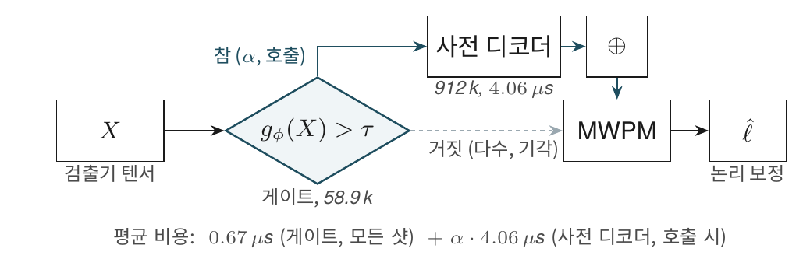
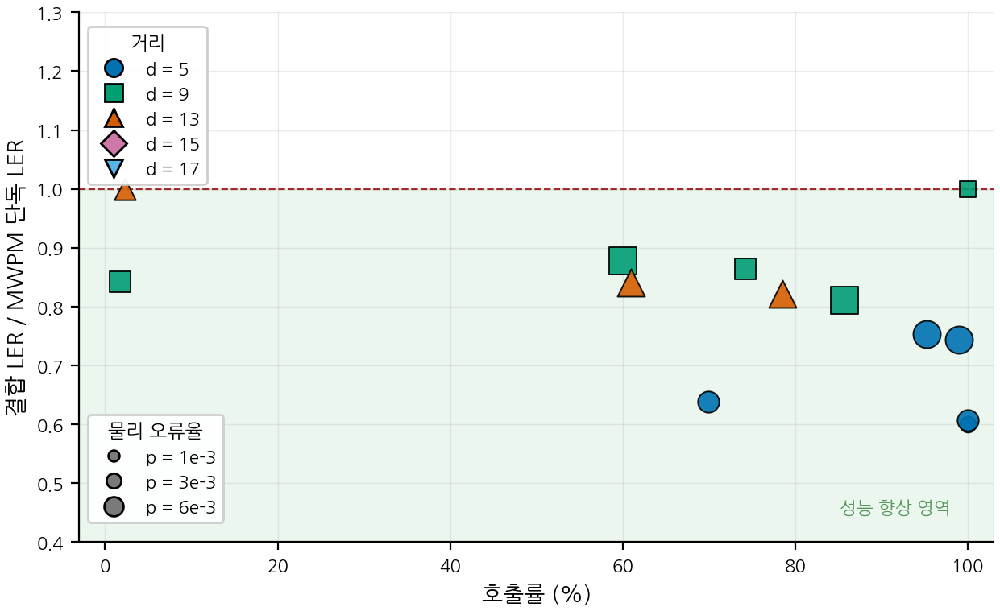
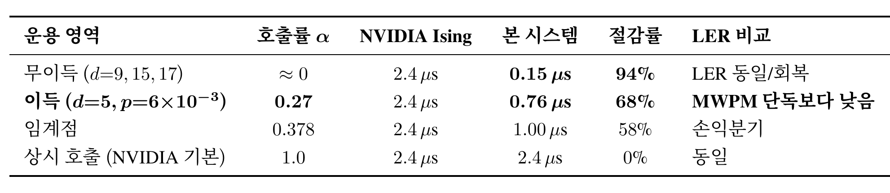

| 운용점 | 호출률(%) | 결합 LER | NN 비용 절감(%) | |
|---|---|---|---|---|
| 0 | MWPM 단독 | 0.0 | 0.0746 | 100.0 |
| 1 | 게이트 τ=-1.0 | 22.8 | 0.0654 | 77.2 |
| 2 | 게이트 τ=-2.0 | 27.7 | 0.0641 | 72.3 |
| 3 | 상시 호출 | 100.0 | 0.0563 | 0.0 |
안녕하세요, ABC 프로젝트 멘토링 2기 ROQET 팀의 여섯 번째 기술노트입니다. 5주차에서 NVIDIA Ising-Decoding의 균일 호출 가정이 거리 13/17에서 통계적으로 깨진다는 사실을 18개 조건에서 측정으로 보였습니다. 이번 주는 그 손해 영역을 학습으로 흡수하는 58.9k 파라미터 선택적 호출 게이트를 설계하고, 분포 외 거리 15/17에서의 자동 기각과 운용점 Pareto 곡선, 단일 샷 지연 회계까지 정리합니다.
Tip이전 포스트
1. 5주차 결과 요약과 게이트의 요구사항
5주차 결과를 한 단락으로 압축하면 다음과 같습니다. 거리 5에서는 NN 사전 디코더가 분명히 이득(LER 비율 1.29~1.53), 거리 9에서는 무이득(비율 ≈ 0.98), 거리 13/17에서는 통계적으로 유의한 손해(비율 0.41~0.74)였습니다. 균일 호출은 이 모든 영역에 동일하게 4 µs를 지불하므로 낭비와 역효과가 동시에 발생합니다.
따라서 본 회차의 게이트는 다음 세 가지 요구사항을 모두 만족해야 합니다.
- 손해 영역 회피와 이득 영역 보존을 동시에 — 거리 13/17의 손해 영역은 기각하되, 거리 5의 이득 영역에서는 호출을 살려야 합니다.
- 단일 샷 지연시간 비용 0 — 게이트가 사전 디코더와 직렬로 붙으면 마이크로초 사이클 한계를 압박하므로, 게이트는 사전 디코더와 병렬 실행이 가능해야 합니다.
- 신드롬 텐서 \(X\) 자체로부터 결정 — 거리 13/\(p=6{\times}10^{-3}\) 같은 셀에서는 NN 이득이 회복되므로 (거리, 오류율, 기저) 의 단순 if-else로는 분리되지 않으며, 신드롬에 직접 의존하는 학습된 분류기가 필요합니다.
2. 게이트 구조와 학습

게이트 \(g_\phi : \mathbb{R}^{T \times d \times d \times 4} \rightarrow [0, 1]\)의 구조는 다음과 같습니다.
- 5층 3차원 합성곱 이진 분류기, 은닉 폭 32, 합성곱 깊이 3
- 적응형 전역 풀링으로 \((T, d)\) 의존성 제거 → 학습 시점과 다른 거리/라운드 수에도 동일 가중치 적용 가능
- 총 파라미터 58,881개, NVIDIA Ising-Decoding (Fast)의 912,772개 대비 약 1/15
설계의 핵심은 입력입니다. 게이트는 사전 디코더의 출력 \(f_\theta(X)\)가 아니라 신드롬 텐서 \(X\) 자체를 입력으로 받습니다. 이 결정 한 줄이 단일 샷 지연 회계 전체를 바꿉니다.
Note왜 신드롬을 직접 입력으로 받는가
게이트가 NN 출력을 봐야 한다면 결정 자체가 NN 호출 후 가능합니다. 이 경우 NN을 호출하지 않기로 결정한 샷 도 이미 NN을 한 번 돌린 뒤이므로 NN 회피의 의미가 사라집니다. 신드롬 직접 입력은 게이트와 사전 디코더를 병렬 실행 가능하게 하여, 게이트 비용이 단일 샷 지연시간에 추가되지 않게 합니다.
학습은 5주차에서 정의한 긍정 기여 라벨 \(y_{\mathrm{help}}\)에 대한 이항 교차 엔트로피로 진행했습니다. 학습 분포는 6개 조건 (\(d \in \{5, 9, 13\} \times p \in \{3{\times}10^{-3}, 6{\times}10^{-3}\}\), \(Z\) 기저), 조건당 10,000 학습/3,000 검증, AdamW(lr \(10^{-3}\)), 배치 128, 12 에폭, 시드 42 설정입니다. 양성 비율은 1.24% — 학습 데이터의 98.76%가 NN을 부르지 않아도 되는 신드롬 에 해당합니다. 평가는 학습과 시드를 분리한 조건당 20,000 샷에서 수행했습니다.
3. 호출 정책 — 임계 τ 한 줄
추론 단계의 호출 정책은 임계 \(\tau\) 한 줄로 정의됩니다.
\[ \pi_\tau(X) = \begin{cases} \hat{\ell}_{\mathrm{NN}}(X) & z_\phi(X) > \tau, \\ \hat{\ell}_{\mathrm{MWPM}}(X) & \text{otherwise}, \end{cases} \]
여기서 \(z_\phi(X)\)는 게이트의 로짓입니다. 두 극한이 의미를 명확히 합니다. \(\tau \to +\infty\) 극한은 모든 샷에서 게이트가 기각하므로 MWPM 단독과 같고, \(\tau \to -\infty\) 극한은 모든 샷에서 호출하므로 NVIDIA 상시 호출과 같습니다. 그 사이의 임계는 LER과 연산량의 균형 곡선, 즉 Pareto 곡선을 그립니다. 학습이 끝난 가중치가 어떤 임계에서도 손해 영역을 호출하지 않는 형태로 수렴하는지를 다음 세 절에서 측정으로 확인합니다.
4. 결과 1 — 무이득 영역 자동 기각
거리 9/\(p=3{\times}10^{-3}\) 조건은 학습 분포에 포함된 무이득 조건입니다. 균일 호출은 LER 0.00130에 4 µs/샷을 지불하지만, MWPM 단독 LER은 0.00095입니다. NN을 매번 부르는 것이 LER을 0.00035 올리면서 비용까지 지불하는 셈입니다.
학습된 게이트의 동작은 다음과 같습니다.
- 게이트 로짓 분포가 모든 양의 임계 아래에 놓입니다.
- 결과적으로 모든 임계에서 호출률 0%로 유지됩니다.
- 결합 LER은 MWPM 단독 수준인 0.00095로 회복되고, 신경망 비용은 100% 절약됩니다.
별도 if-else 규칙을 넣은 결과가 아닙니다. 학습이 끝난 시점의 게이트 가중치 자체가 이 영역의 신드롬에 대해 모두 음수 로짓을 출력합니다. 여기서는 NN을 부르지 마 라는 결정이 데이터로부터 학습된 결과이며, 이 회피는 비학습 밀도 기준선(양성 비율과 동일한 호출률을 임의 표본에 적용)에 비해 약 4배 더 선택적입니다.
5. 결과 2 — 이득 영역 선택적 호출과 Pareto 곡선
거리 5/\(p=6{\times}10^{-3}\) 조건은 5주차 표에서 비율 1.29로 NN 이득이 가장 큰 셀 중 하나였습니다. 이 영역에서는 게이트가 기각이 아니라 선택적 호출 모드로 동작해야 합니다.

수치를 정리하면 다음과 같습니다.
| 운용점 | 호출률 | 결합 LER | NN 비용 |
|---|---|---|---|
| MWPM 단독 (\(\tau \to +\infty\)) | 0% | 0.0746 | 0 |
| 게이트, \(\tau = -1.0\) | 22.8% | 0.0654 | ≈ 23% |
| 게이트, \(\tau = -2.0\) | 27.7% | 0.0641 | ≈ 28% |
| 상시 호출 (\(\tau \to -\infty\)) | 100% | 0.0563 | 100% |
27.7% 호출만으로 결합 LER이 MWPM 단독(\(0.0746\))보다 낮은 \(0.0641\)에 도달하며, 신경망 호출 비용은 약 72% 감소합니다. 상시 호출의 LER 0.0563에는 못 미치지만 Pareto 우위 운용점이 분명히 형성됩니다. 가장 낮은 LER 만을 목표로 한다면 상시 호출이 여전히 최적이고, 신경망 호출 비용을 절감해야 하는 운용 제약 아래에서는 게이트가 명확한 선택지가 됩니다.
6. 결과 3 — 분포 외 거리 15/17에서의 자동 기각
게이트는 학습 분포 \(d \in \{5, 9, 13\}\)만으로 학습되었습니다. 거리 15와 17 조건(\(p=3{\times}10^{-3}\), 두 기저, 조건당 50,000 샷)은 학습에 한 번도 등장하지 않은 거리이고, 5주차에서 확인했듯 LER 비율 0.41~0.61로 손해가 가장 깊은 영역입니다.
같은 가중치를 적용한 결과는 다음과 같습니다.
- 두 거리 모두에서 게이트 로짓 분포가 −3 이하에 놓입니다.
- 임계 \(\tau \in [-3, 1]\)의 어느 점에서도 호출률 0%로 유지됩니다.
- 손해 영역의 LER 증가가 자동으로 회피됩니다.
학습 데이터에 거리 15/17이 없으므로 게이트는 이 거리에서는 NN을 쓰지 마 라고 명시적으로 배운 적이 없습니다. 그럼에도 학습된 가중치가 NN이 도움 되는 신드롬은 어떻게 생겼는가 를 충분히 좁게 학습하면서, 그 외의 모든 신드롬을 자연스럽게 기각하는 형태로 수렴한 결과입니다.
운용 관점에서는 표면 부호의 거리가 늘어나며 운용되는 일반적 시나리오에서 게이트가 외삽 영역에서 안전 측으로 동작한다는 의미를 가집니다. 분포 외 환경에서 신경망이 위험 요인이 될 수 있는 상황에서 게이트가 기본 안전망 역할을 할 수 있음을 시사합니다.
7. 지연 비용 회계

게이트의 비용도 정직하게 적어야 합니다. RTX 5090 FP16, 배치 256, 거리 5, \(T=9\) 환경에서 측정한 결과:
- 게이트 자체 비용: 한 샷당 0.67 µs
- 호출률 5% 수준의 무이득 영역에서 배치 평균 비용: 0.87 µs
- 호출이 결정된 샷의 단일 지연시간: 4.73 µs
배치 평균 관점에서는 명확한 이득입니다. 무이득 영역에서 4 µs를 100% 절약하면서 게이트 비용 0.87 µs만 더하면 순 절감이 약 3 µs 수준입니다. 다만 단일 샷 마감 보장 관점에서는 4.73 µs가 1 µs 사이클 한계를 초과하므로, 호출 샷의 마감 보장은 게이트만으로는 해결되지 않습니다. 본 회차는 이 한계를 기록하는 데 그치고, speculative execution 등 추가 파이프라인 설계는 향후 과제로 남깁니다.
정리
| 항목 | 결과 |
|---|---|
| 게이트 설계 | 5층 3D Conv, 58,881 파라미터, 신드롬 직접 입력 → 사전 디코더와 병렬 실행 |
| 무이득 영역(거리 9) | 호출률 0% 자동 기각, MWPM 단독 LER 회복, 4 µs/샷 100% 절약 |
| 이득 영역(거리 5) | 27.7% 호출만으로 결합 LER이 MWPM 단독보다 낮음, NN 비용 약 72% 절감 |
| 분포 외 거리 15/17 | 학습에 등장하지 않은 거리에서도 호출률 0% 유지 |
| 지연 회계 | 배치 평균 0.87 µs (이득), 단일 샷 4.73 µs (1 µs 한계 초과) |
균일 호출 가정의 비최적 영역을 측정으로 드러내고, 학습된 게이트로 그 영역을 흡수하면서 분포 외 거리까지 안전 측으로 일반화되는 운용점이 형성됨을 확인했습니다.
Note다음 주차 예고
7주차에서는 4주차에 예고한 상관 잡음 또는 soft 신드롬 셋업을 GNN 디코더에 도입하여, MWPM이 표현하지 못하는 정보가 들어왔을 때 격차가 어떻게 변하는지를 측정합니다.
Tip참고 문헌
- Chamberland, C. et al. (2026). Ising-Decoding: A Hardware-Aware Neural Pre-Decoder for Surface Codes. NVIDIA Research.
- Bausch, J. et al. (2024). Learning to decode the surface code with a recurrent, transformer-based neural network. Nature.
- Higgott, O. & Gidney, C. (2025). PyMatching v2: Sparse Blossom for fast minimum-weight perfect matching. github.com/oscarhiggott/PyMatching
- Gidney, C. (2021). Stim: a fast stabilizer circuit simulator. Quantum 5, 497.
- Fowler, A. G. et al. (2012). Surface codes: Towards practical large-scale quantum computation. Phys. Rev. A 86, 032324.